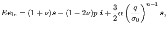
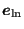
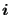
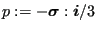
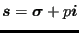
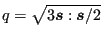

Next: Incremental (visco)plasticity: multiplicative decomposition Up: Materials Previous: Hyperelastic and hyperfoam materials Contents
Deformation plasticity is characterized by a one-to-one (bijective) relationship between the strain and the stress. This relationship is a three-dimensional generalization of the one-dimensional Ramberg-Osgood law frequently used for metallic materials (e.g. in the simple tension test) yielding a monotonic increasing function of the stress as a function of the strain. Because tensile and compressive test results coincide well when plotting the Cauchy (true) stress versus the logarithmic strain, these quantities are generally used in the deformation plasticity law. The implementation in CalculiX (keyword card *DEFORMATION PLASTICITY) implicitly uses the Abaqus interface in CalculiX for large deformations. The three-dimensional extension of the Ramberg-Osgood law reads [1]:
 |
(403) |
where
     is the Cauchy stress,
is the Cauchy stress,
 and
and  are Young's
modulus and Poisson's coefficient, respectively (cf. *DEFORMATION
PLASTICITY for the one-dimensional form).
are Young's
modulus and Poisson's coefficient, respectively (cf. *DEFORMATION
PLASTICITY for the one-dimensional form).
The user should give the Ramberg-Osgood material constants
 ,
,  and
and  directly (by plotting a Cauchy stress versus logarithmic strain curve and performing a fit).
directly (by plotting a Cauchy stress versus logarithmic strain curve and performing a fit).